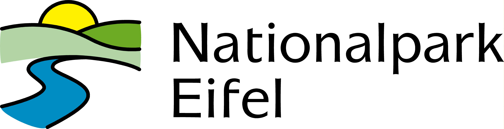

Nationaalpark-Eifel
INDEX
GALERIJ
INFO
De burcht, inclusief schatkamer en lunchgelegenheden, is iedere dag van eind maart tot begin november tussen 09:30 en 17:30 geopend.
Routebeschrijving naar de Eifel
Eifel video's